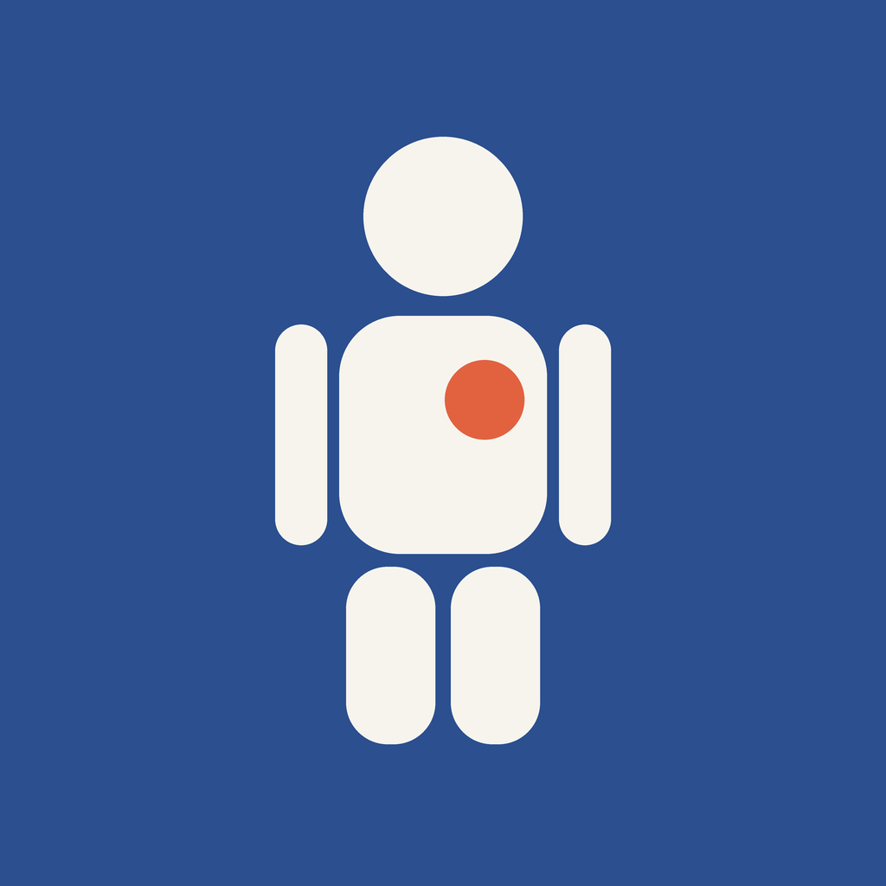

증상 기록
아픈 곳을 짚어 기록하고, 진료 때 보여 주세요
몸 그림에서 아픈 곳을 눌러 언제, 어떻게 아팠는지 기록하는 앱이에요. 먹은 약과 효과도 함께 적고, 모은 기록은 진료 요약 PDF로 만들어 의사에게 보여 줄 수 있어요.
문의하기
앱을 쓰다 궁금한 점이나 불편한 점이 있으면 메일로 알려 주세요.
자주 묻는 질문
기록은 어디에 저장되나요?
이 휴대폰에만 저장돼요. 개발자는 기록을 보거나 받지 않아요.
휴대폰을 바꾸면 기록이 옮겨지나요?
자동으로 옮겨지지 않아요. 설정 → 백업에서 백업 파일을 만든 뒤 새 휴대폰에서 불러오세요.
기록을 모두 지우고 싶어요.
설정 → 앱 정보 → 기록 모두 지우기를 누르세요. 지운 기록은 되돌릴 수 없어요.
꼭 알아 두세요
- 질병을 진단하거나 치료법을 알려 주지 않아요. 건강에 관한 결정은 꼭 의사와 상의하세요.
- 갑자기 심하게 아프거나 응급 상황이면 바로 119에 연락하세요.